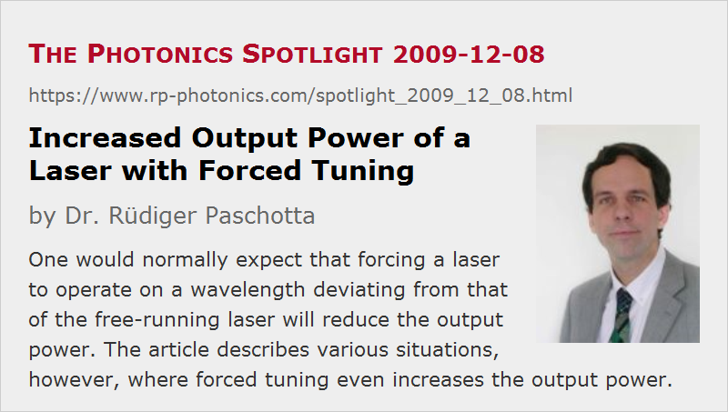

Increased Output Power of a Laser with Forced Tuning
Posted on 2009-12-08 as a part of the Photonics Spotlight (available as e-mail newsletter!)
Permanent link: https://www.rp-photonics.com/spotlight_2009_12_08.html
Author: Dr. Rüdiger Paschotta, RP Photonics Consulting GmbH
Abstract: One would normally expect that forcing a laser to operate on a wavelength deviating from that of the free-running laser will reduce the output power. The article describes various situations, however, where forced tuning even increases the output power.

Ref.: encyclopedia articles on wavelength tuning
By using an intracavity bandpass filter with adjustable transmission wavelength, we can tune the emission wavelength of a laser. One would normally expect that the highest output power is obtained when one allows the laser to operate at the wavelength which it would choose itself when no filter is present. Curiously, this is not always true.
But let's first ask why we would actually expect the above statement to be true. It is probably because the laser will then operate at the wavelength of highest net gain. But why exactly should this lead to the highest efficiency? Surely, it would mean that the lowest amount of excitation of the gain medium is required, and therefore the minimum possible power is lost via spontaneous emission. However, is this enough to guarantee that the power is most efficiently extracted from the gain medium?
In fact, it isn't. Imagine a situation where at the wavelength of highest gain there is also some parasitic loss, resulting from excited-state absorption, for example. One may then obtain a higher output power by forcing the laser to operate at some different wavelength, having a somewhat lower gain but also avoiding that loss. This situation, of course, can occur only when there is a wavelength-dependent power loss, which is sufficiently high to be relevant but also sufficiently weak that it does not affect the laser wavelength.
In a somewhat similar case, we could have a very high output coupler reflectivity at some wavelength, but a very small output coupling efficiency, because parasitic losses would destroy most of the generated power. It would again help to force the laser to operate at a wavelength where the output coupling efficiency is higher.
The described phenomenon can even occur in a situation where there are no parasitic losses. Imagine that there is gain in two different wavelength regions, exhibiting a significantly different quantum defect. For example, we could have a neodymium-doped laser crystal, strongly pumped around 0.8 μm and having gain around 0.95 μm, 1.06 μm and also in the 1.3-μm region. If the laser resonator offers similar losses for all wavelengths, the laser will normally run at 1.06 μm, where the gain is highest. However, with a tuner we can force the laser to operate at 0.95 μm. As the quantum defect is then lower, it might have a higher efficiency and thus produce a higher output power. Well, this outcome may not be typical, as usually it is harder to obtain a high efficiency in the 0.95-μm region, but there are no fundamental reasons against my claim.
As another example, consider an ytterbium-doped fiber laser. If the output coupler reflectivity is 80%, for example, the laser will tend to operate at long wavelengths around 1080 nm, where reabsorption is weak. (See the minimum of the gray curve in the figure above.) By forcing the laser to operate at 1035 nm, for example, one can obtain slightly more output power, although the average ytterbium excitation and thus the fluorescence power is then significantly higher. Overall, the fluorescence power isn't that important here, as the laser gain is strongly saturated.
So we see that for various reasons a free-running laser may operate on a wavelength which does not produce the highest possible output power, and enforcing a different wavelength increases the output power.
This article is a posting of the Photonics Spotlight, authored by Dr. Rüdiger Paschotta. You may link to this page and cite it, because its location is permanent. See also the RP Photonics Encyclopedia.
Note that you can also receive the articles in the form of a newsletter or with an RSS feed.
Questions and Comments from Users
Here you can submit questions and comments. As far as they get accepted by the author, they will appear above this paragraph together with the author’s answer. The author will decide on acceptance based on certain criteria. Essentially, the issue must be of sufficiently broad interest.
Please do not enter personal data here; we would otherwise delete it soon. (See also our privacy declaration.) If you wish to receive personal feedback or consultancy from the author, please contact him e.g. via e-mail.
By submitting the information, you give your consent to the potential publication of your inputs on our website according to our rules. (If you later retract your consent, we will delete those inputs.) As your inputs are first reviewed by the author, they may be published with some delay.
|  |
If you like this page, please share the link with your friends and colleagues, e.g. via social media:
These sharing buttons are implemented in a privacy-friendly way!